Kézikönyv vásárlóknak
Előadások keresése, vásárlása és használata – lépésről lépésre
Ez a kézikönyv az előadásplatformot a vásárlók szemszögéből mutatja be. Az ábrák a kitalált „Példa Akadémia” platformot mutatják kitalált előadásokkal és adatokkal.
Tartalomjegyzék
- ★Gyors kezdés öt lépésben
- 1Áttekintés
- 2Regisztráció és az e-mail-cím megerősítése
- 3Belépés és jelszó
- 4Előadások keresése és kiválasztása
- 5Előadás vásárlása
- 6Előadások és leckék használata
- 7Fiókom, rendelések és bizonylatok
- 8Előfizetés kezelése és lemondása
- 9Elállás és visszatérítés
- 10Adatvédelem és a fiók törlése
- 11Segítség és kapcsolat
★ Gyors kezdés öt lépésben
- Fiók létrehozása: Kattints fent a Regisztráció menüpontra, és add meg az e-mail-címedet és egy jelszót (legalább 8 karakter). Jelöld be a feltételek elfogadását (2. fejezet).
- E-mail-cím megerősítése: Nyisd meg a megerősítő e-mailben kapott hivatkozást. Megerősített cím nélkül nem lehet vásárolni (2. fejezet).
- Előadás kiválasztása: Nyiss meg egy előadást az előadások listájában, és olvasd el a leírást, a leckéket és az árat (4. fejezet).
- Vásárlás: Jelöld be a hozzájárulást, kattints a vásárlás gombra, és fizess a Stripe fizetési oldalán (5. fejezet).
- Tanulás: Az előadásaidat az Előadásaim menüpont alatt találod (6. fejezet). Segítséget a 11. fejezetben kapsz.
1 Áttekintés
Az előadásplatformon online előadásokat vásárolsz, és közvetlenül a böngészőben használod őket. Egy előadás leckékből áll, amelyek szöveget, videót, PDF-dokumentumot vagy hanganyagot tartalmaznak. Vásárlás után az előadásaidat az Előadásaim menüpont alatt találod, amíg a hozzáférésed fennáll, és be vagy jelentkezve.
Amire szükséged van
- egy korszerű webböngésző (számítógép, táblagép vagy okostelefon),
- egy saját e-mail-cím, amelyhez hozzáférsz,
- fizetős előadásokhoz egy fizetési mód, amelyet a fizetési oldal felkínál (például bankkártya).
A fejléc
Minden oldal tetején megtalálod a menüt. Vendégként az Előadások, a Belépés és a Regisztráció menüpontot látod. Belépés után megjelenik az Előadásaim, a Fiókom és a Kilépés.
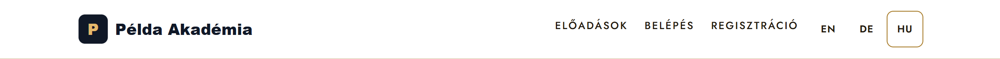
Nyelv kiválasztása
A fejléc jobb oldalán választod ki a nyelvet: EN (angol), DE (német) vagy HU (magyar). A platform megjegyzi a választásodat ebben a böngészőben, és ha be vagy jelentkezve, a fiókodban is. Ezután az oldal a kiválasztott nyelven töltődik be újra.
2 Regisztráció és az e-mail-cím megerősítése
Előadások vásárlásához fiókra van szükséged. Az előadások listáját és az előadások oldalait fiók nélkül is megnézheted.
Fiók létrehozása
- Kattints a fejlécben a Regisztráció menüpontra.
- Add meg az e-mail-címedet és egy legalább 8 karakteres jelszót. A jelszómezőben lévő szem ikonnal a jelszót rövid időre megjelenítheted.
- Olvasd el a részvételi feltételeket és az adatvédelmi tájékoztatót (hivatkozások az űrlapon), és jelöld be a négyzetet. A jelölés nélkül nem lehet regisztrálni.
- Kattints a Regisztráció gombra.
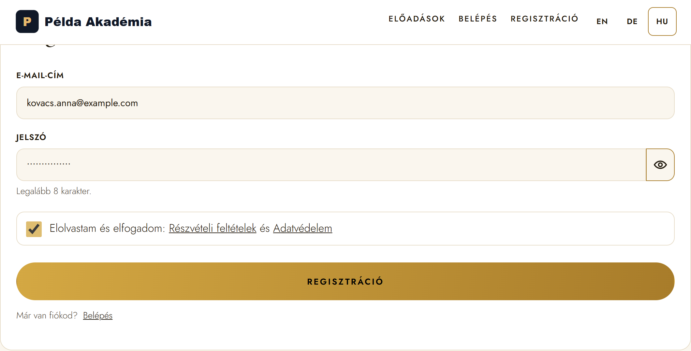
A regisztráció után azonnal be vagy jelentkezve. Az oldal tetején megjelenik egy figyelmeztetés, hogy még meg kell erősítened az e-mail-címedet. Ha a címhez már tartozik fiók, a platform ezt jelzi, és felkínálja az Elfelejtetted a jelszavad? hivatkozást.
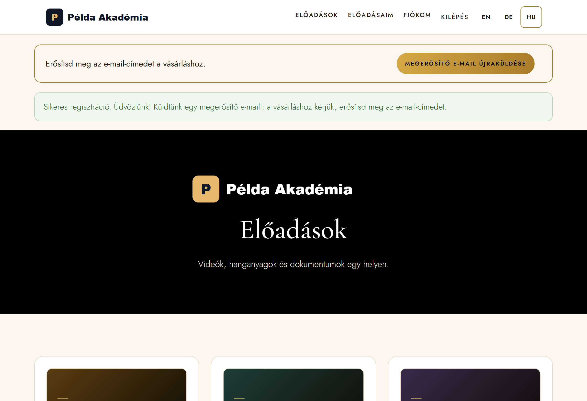
Az e-mail-cím megerősítése
Kapsz egy e-mailt a Megerősítem az e-mail-címemet gombbal. A hivatkozás 24 óráig érvényes, és csak egyszer használható.
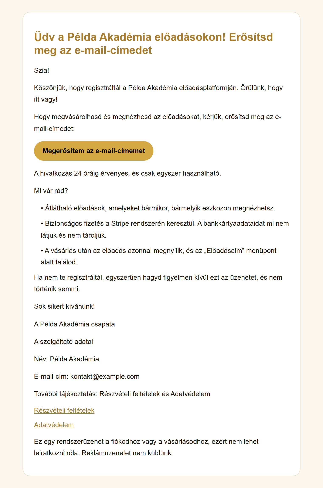
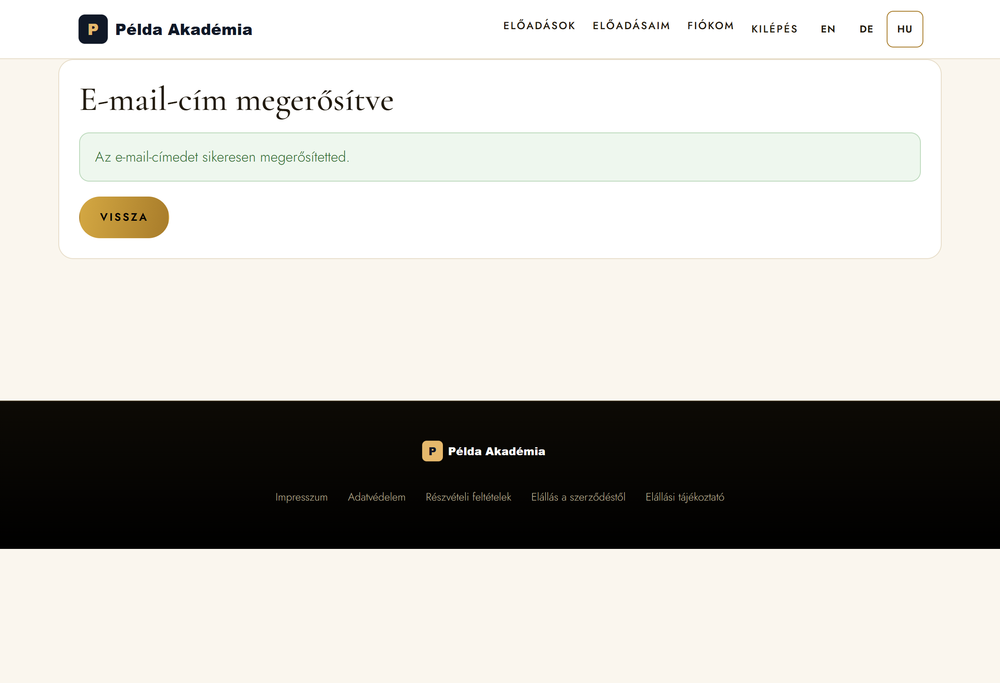
Nem kaptál e-mailt? Nézd meg a levélszemét mappát. Az oldal tetején lévő figyelmeztetésben a Megerősítő e-mail újraküldése gombbal új e-mailt kérhetsz. Az új hivatkozás felváltja a régit.
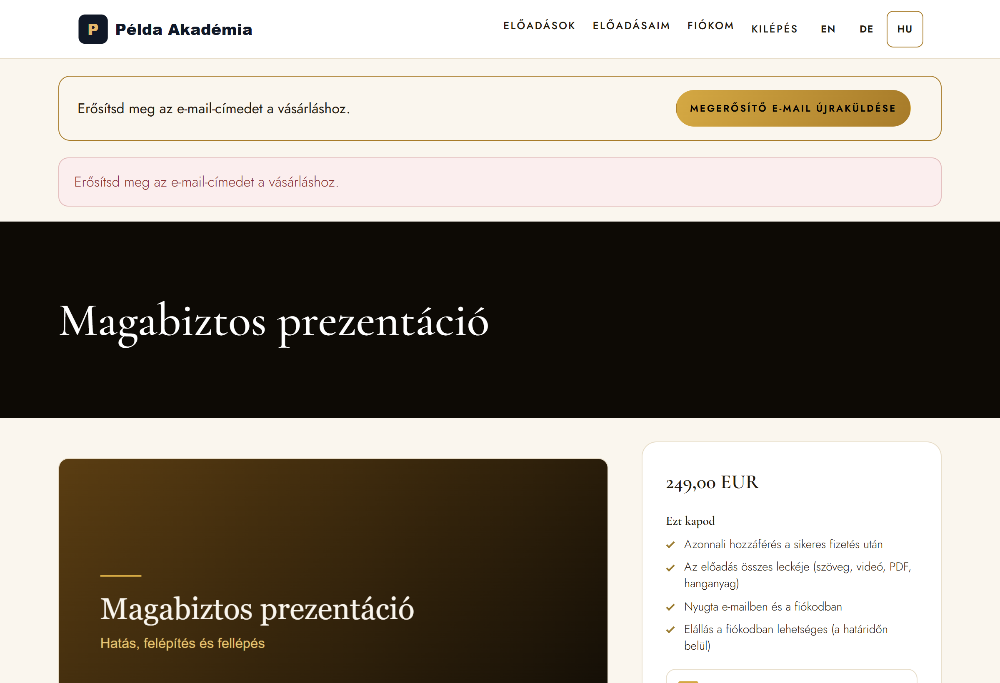
3 Belépés és jelszó
Belépés
- Kattints a Belépés menüpontra.
- Add meg az e-mail-címedet és a jelszavadat, majd kattints a Belépés gombra.
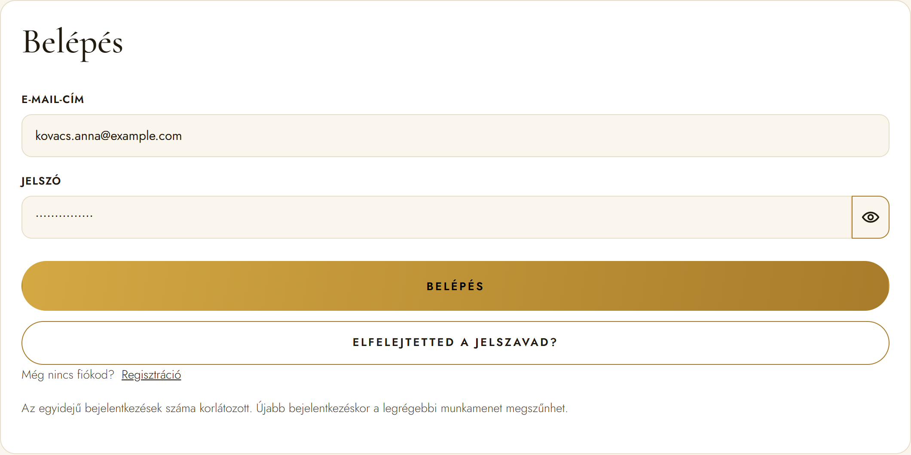
Ha éppen egy előadást akartál megvásárolni vagy megnyitni, a platform belépés után visszavisz oda.
- Több eszköz: Az egyidejű belépések száma korlátozott. Ha egy további eszközön lépsz be, a legrégebbi munkamenet véget érhet. Ott egyszerűen lépj be újra.
- Túl sok sikertelen próbálkozás: Túl sok hibás megadás után a platform átmenetileg letiltja a belépést („Túl sok próbálkozás. Kérlek, próbáld újra később.”). Ilyenkor várj egy kicsit, vagy állítsd vissza a jelszavadat.
- Kilépés: Kattints a fejlécben a Kilépés menüpontra, különösen közösen használt eszközökön.
Elfelejtett jelszó
- Kattints a belépési űrlapon az Elfelejtetted a jelszavad? hivatkozásra.
- Add meg az e-mail-címedet, és kattints a Hivatkozás kérése gombra. Biztonsági okokból a platform nem árulja el, hogy tartozik-e fiók a címhez.
- Nyisd meg az e-mailben kapott hivatkozást. 30 percig érvényes, és csak egyszer használható.
- Add meg kétszer az új jelszót, és kattints a Jelszó visszaállítása gombra. Ezután az új jelszóval lépsz be. Közben minden korábbi belépés megszűnik.
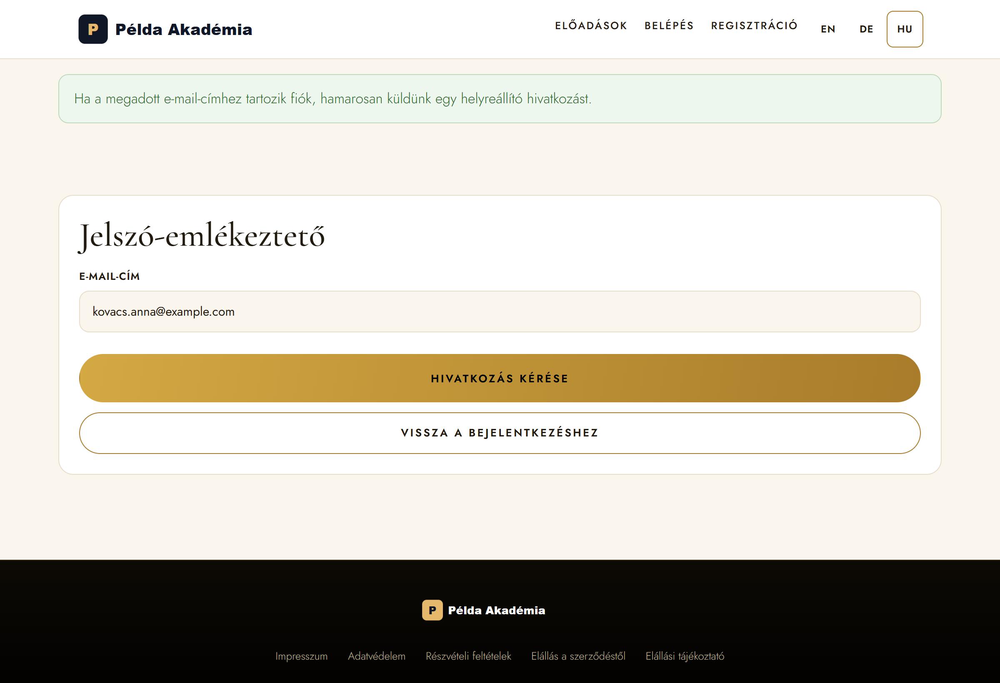
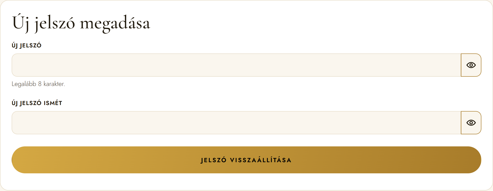
Jelszó módosítása
Belépve a jelszavadat a Fiókom → Jelszó módosítása alatt módosíthatod (az Előadásaim oldalon is van rá hivatkozás): add meg a jelenlegi jelszót, kétszer az új jelszót, majd Jelszó mentése.
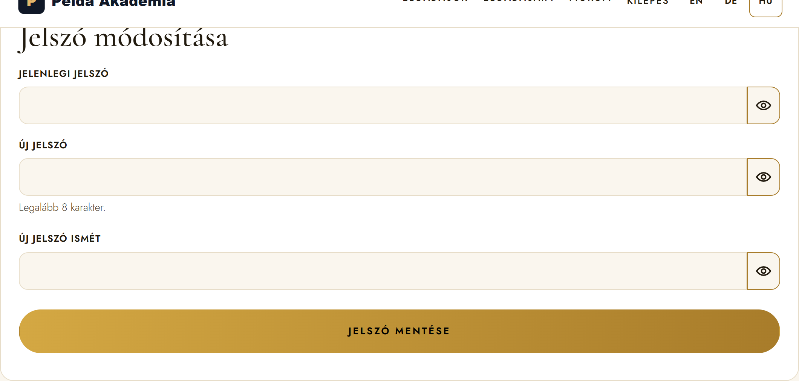
4 Előadások keresése és kiválasztása
Az előadások listája
A kezdőoldal (Előadások) az összes kínált előadást mutatja borítóképpel, rövid leírással és árral. A már megvásárolt előadásokon a Megvásárolva jelölés áll, és közvetlenül a Megnyitás gombbal nyithatók meg. A Megnézem gombbal az előadás oldalára jutsz.
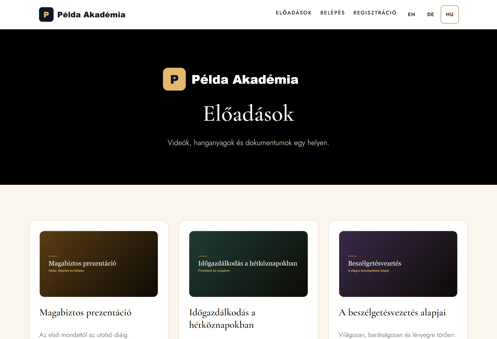
Az előadás oldala
Az előadás oldalán mindent megtalálsz, amire a döntéshez szükséged van:
- borítókép vagy előadásbemutató videó (ha a szolgáltató feltöltött ilyet),
- a leírás és A szolgáltató doboz egy kapcsolattartási címmel a vásárlás előtti kérdésekhez,
- Mit fogsz megtanulni: az előadás tanulási céljai,
- Leckék: az összes lecke címmel, szakaszokra bontva. Vásárlás előtt a Vásárlás után elérhető jelölés áll rajtuk,
- jobb oldalon (okostelefonon a bemutatóvideó alatt) a vásárlási doboz az árral és a vásárlás gombbal.
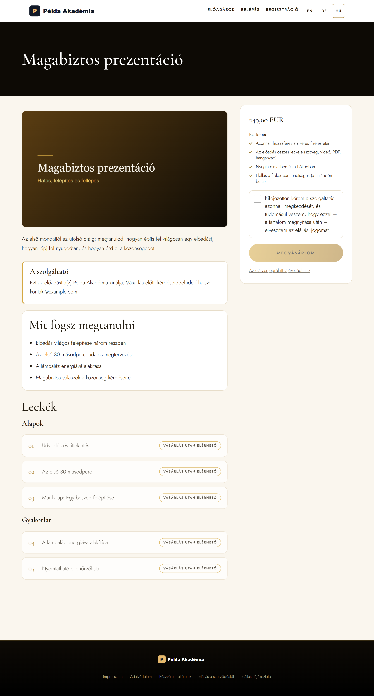
5 Előadás vásárlása
Egy előadás kínálható egyszeri vásárlásként, előfizetésként vagy ingyenesen. Hogy mi érhető el, azt a vásárlási dobozban látod. Minden vásárlás feltétele: be vagy jelentkezve, és megerősítetted az e-mail-címedet (lásd 2. fejezet).
1. lépés: Hozzájárulás megadása
Fizetős előadásoknál a vásárlás gomb először le van tiltva. Előbb jelöld be a négyzetet:
„Kifejezetten kérem a szolgáltatás azonnali megkezdését, és tudomásul veszem, hogy ezzel – a tartalom megnyitása után – elveszítem az elállási jogomat.”
Ez az a szöveg, amelyet a platform ezen a ponton megjelenít. A jogi következményeket a szolgáltató elállási tájékoztatója ismerteti.
Csak ezután válik aktívvá a Megvásárlom (illetve az Előfizetek) gomb. A platform elmenti a hozzájárulásod időpontját. Hogy ennek milyen következménye van egy későbbi elállásra, azt a 9. fejezet írja le. A vásárlás gomb alatt egy hivatkozás vezet az elállási jogról szóló tájékoztatáshoz.
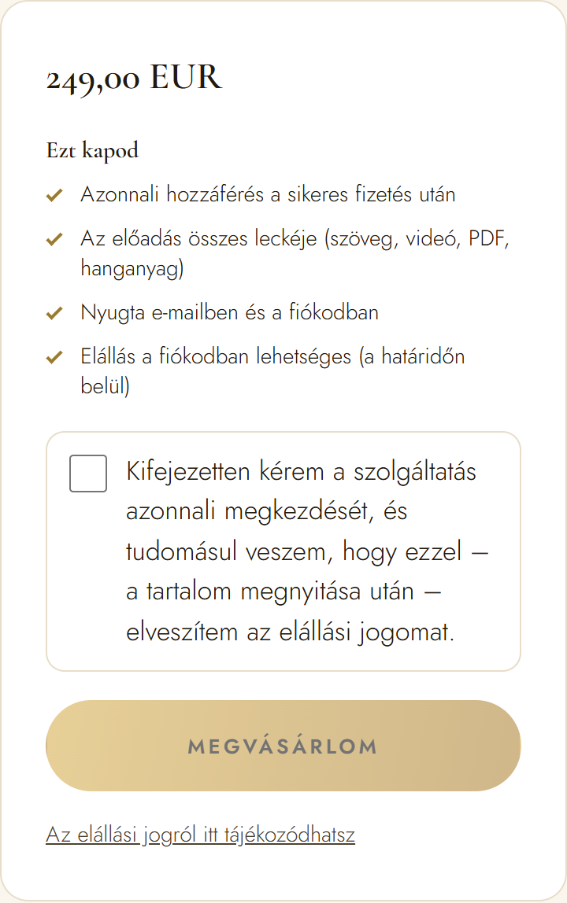
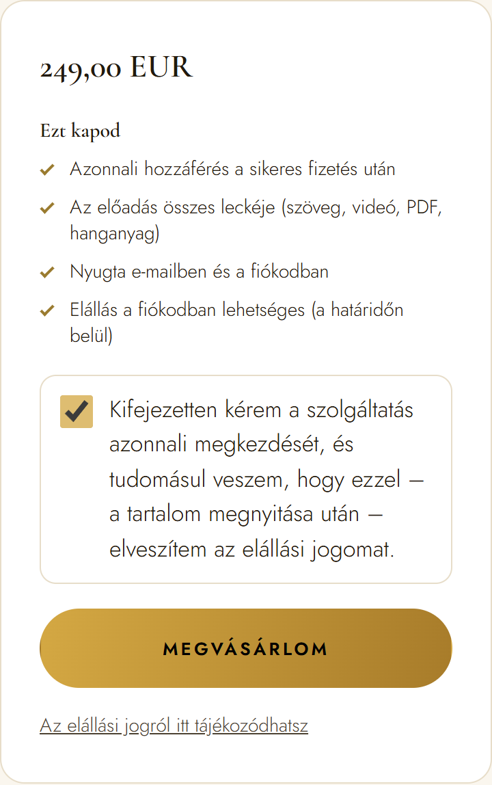
2. lépés: Fizetés
- Kattints a Megvásárlom gombra. Megjelenik az „Átirányítunk a fizetéshez…” üzenet.
- A Stripe fizetési szolgáltató biztonságos fizetési oldalára jutsz. Ott adod meg a fizetési adataidat. A kártyaadataidat az előadásplatform nem látja és nem tárolja.
- A fizetési oldalon számlázási címet kell megadni. Céges vásárlók ezen felül adószámot is megadhatnak (nem kötelező).
- Hagyd jóvá a fizetést. Ezután a Stripe visszavezet az előadásplatformra.
3. lépés: Visszaigazolás
Visszatérés után a platform ezt mutatja: „Köszönjük! Ellenőrizzük a fizetést…”. A hozzáférés csak akkor jön létre, amikor a Stripe megerősítette a fizetést. Ez többnyire csak néhány másodperc. Amint a fizetés beérkezett, megjelenik a Megnyitás gomb.
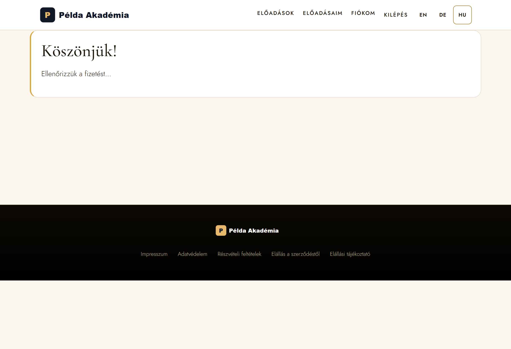
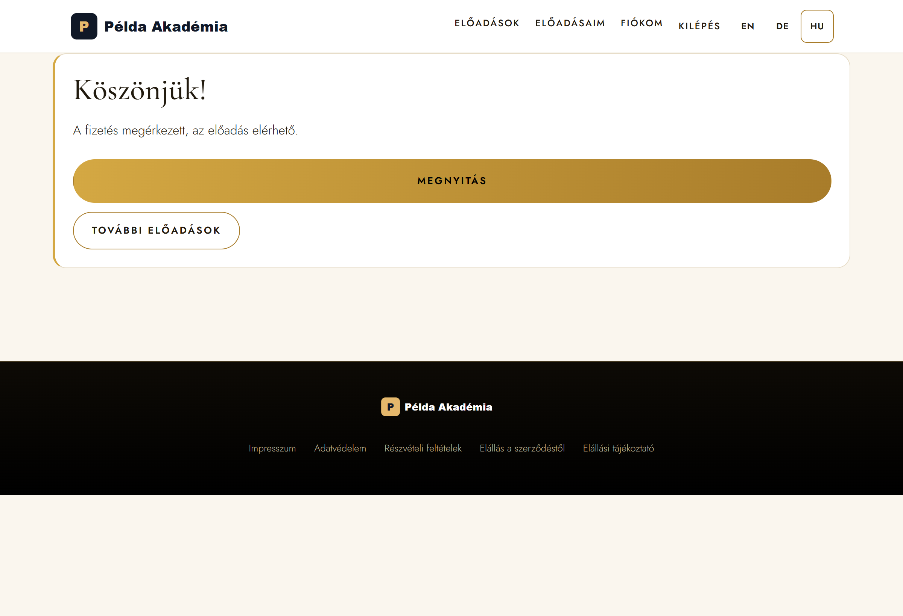
Ha az ellenőrzés tovább tart, megjelenik egy figyelmeztetés, hogy később nézz vissza az Előadásaim oldalon. Nem kell újra fizetned.
Ezen felül kapsz egy e-mailes vásárlási visszaigazolást az előadással, az összeggel, a dátummal, a rendelésszámmal, a szolgáltató adataival, a hozzájárulásod időpontjával, egy gombbal az előadáshoz, egy utalással a fizetési bizonylatra és az elállási tájékoztatóval.
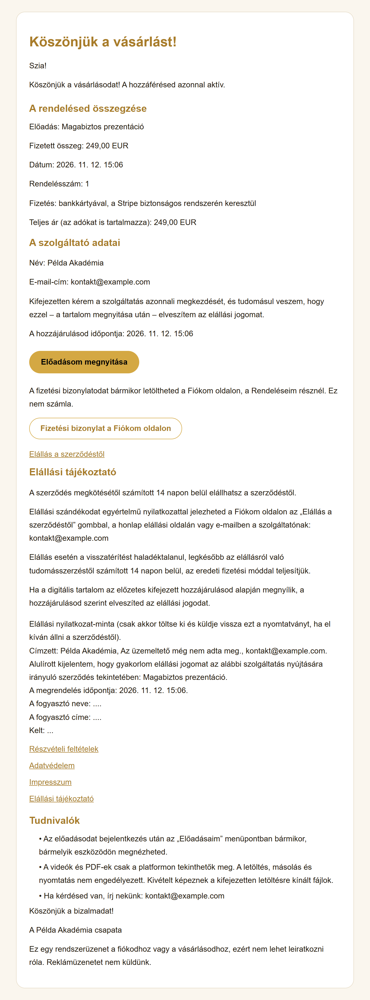
Megszakított fizetés
Ha a fizetési oldalon megszakítod a folyamatot, a platform ezt mutatja: „A fizetés megszakadt”. A Rendeléseim oldalon ellenőrizheted, történt-e fizetés. A Vissza az előadáshoz gombbal újra megpróbálhatod.
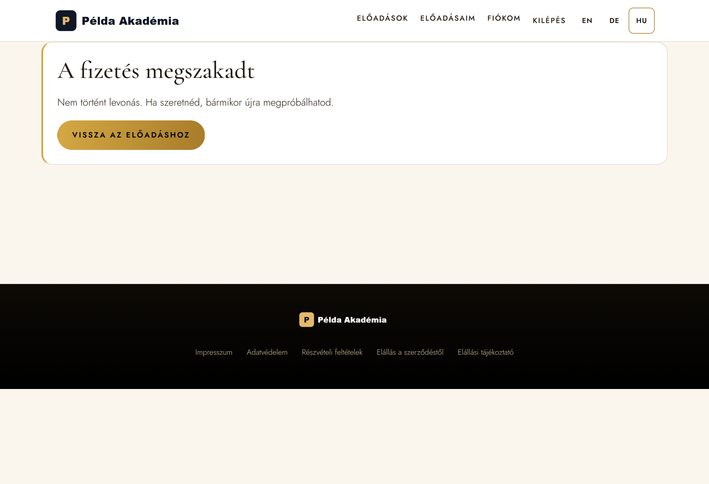
Előfizetés
Ha a szolgáltató egy előadást előfizetésként is kínál, a vásárlási dobozban ezen felül az Előfizetek gomb is megjelenik az árral és az időszakkal (havi vagy éves). A négyzet bejelölése itt is kötelező. Az előfizetés automatikusan megújul, amíg le nem mondod (8. fejezet). Egy előadáshoz egyszerre mindig csak egy előfizetés futhat.
Ingyenes előadások
Ingyenes előadásoknál az Ingyenes hozzáférés gomb látható. Egy kattintás elég: nincs fizetési oldal, az előadás azonnal elérhetővé válik. A szolgáltató közvetlenül is adhat neked ingyenes hozzáférést egy előadáshoz. Ilyenkor a „Hozzáférést kaptál” e-mailt kapod, és az előadás megjelenik az Előadásaim alatt.
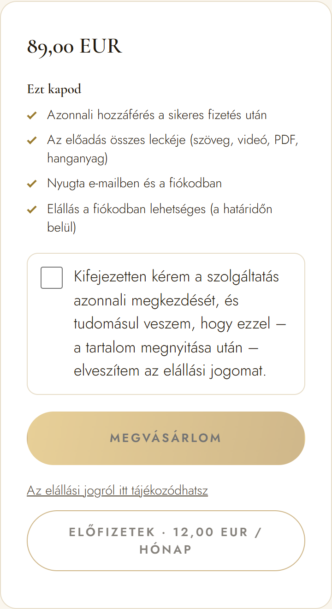
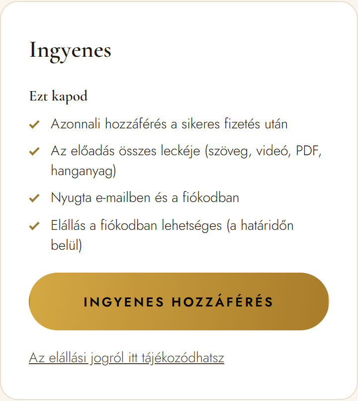
6 Előadások és leckék használata
Előadásaim
Az Előadásaim oldalon minden olyan előadás szerepel, amelyhez hozzáférésed van, a Hozzáférés aktív jelöléssel. Előfizetéses előadásoknál egy második mező mutatja az előfizetés állapotát: Aktív, Lemondva, Fizetésre vár vagy Megszűnt. Fent találod az Előfizetésem kezelése és a Jelszó módosítása gombot.
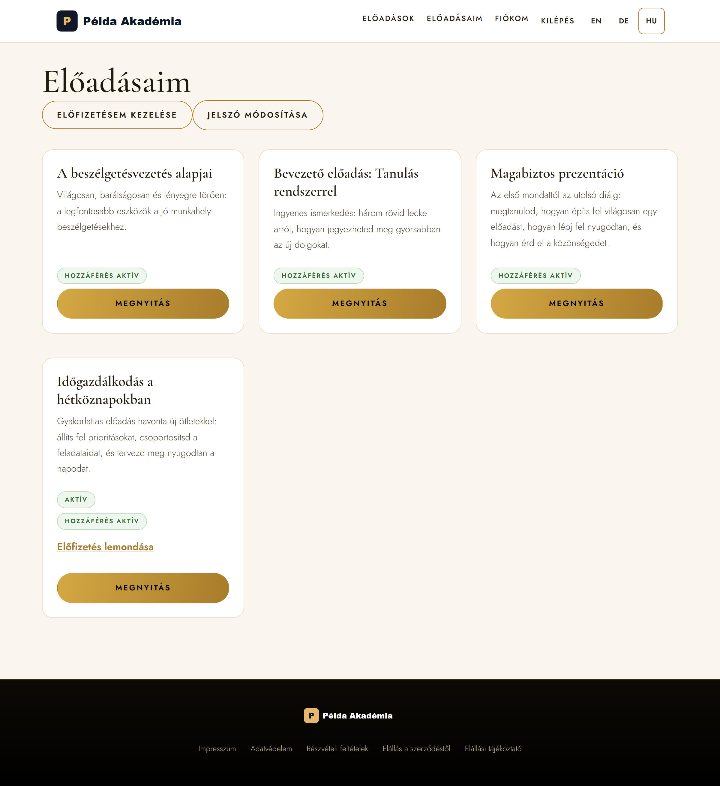
Az előadás áttekintése
A Megnyitás gombbal az előadás áttekintő oldalára jutsz. Minden lecke mutatja a címét és a típusát (szöveg, videó, PDF, hang). A Megnyitás gombbal indítod a leckét.
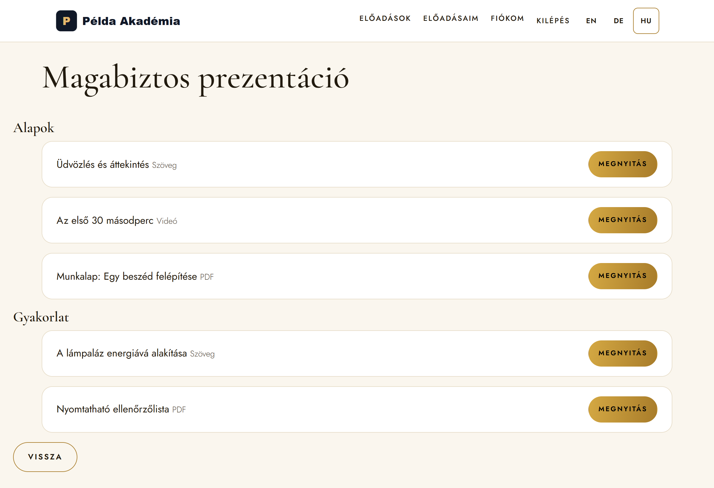
Leckék
Minden lecke végén az Előző lecke és a Következő lecke gomb vezet végig az előadáson; a Vissza gomb az előadás áttekintéséhez visz.
- Szöveg: A tartalom közvetlenül az oldalon jelenik meg.
- Videó és hang: Lejátszás a platform lejátszójában. A szolgáltató beállításaitól függően egy videó egy csatlakoztatott videószolgáltatáson keresztül is futhat.
- PDF: A dokumentum saját nézetben jelenik meg. A nyilakkal lapozol, a − és a + gombbal kicsinyíted és nagyítod a nézetet.
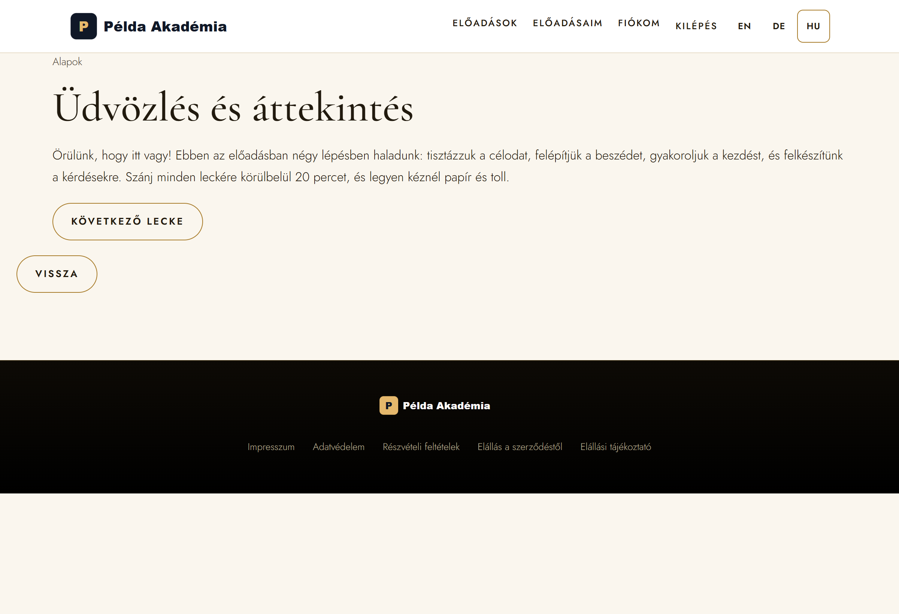
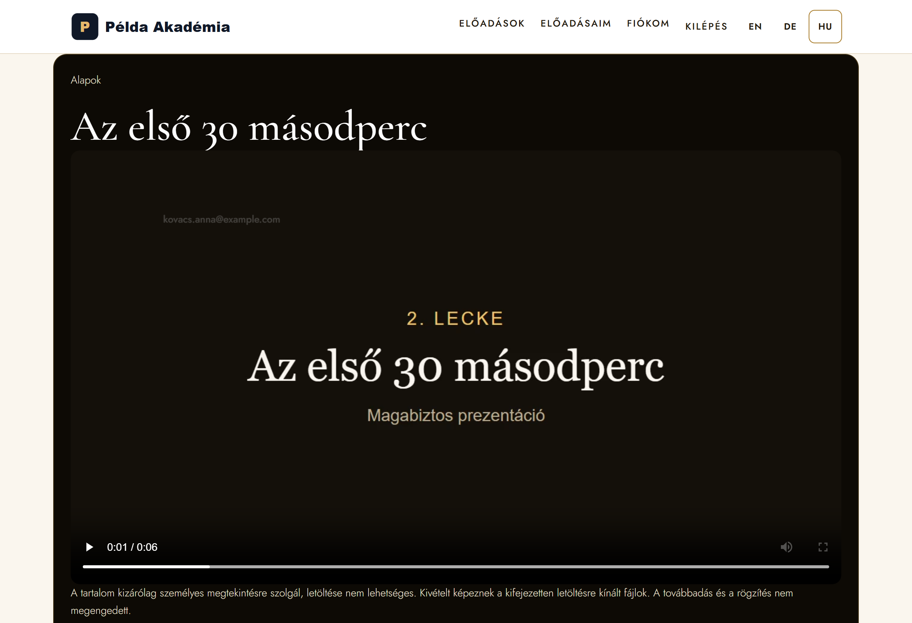
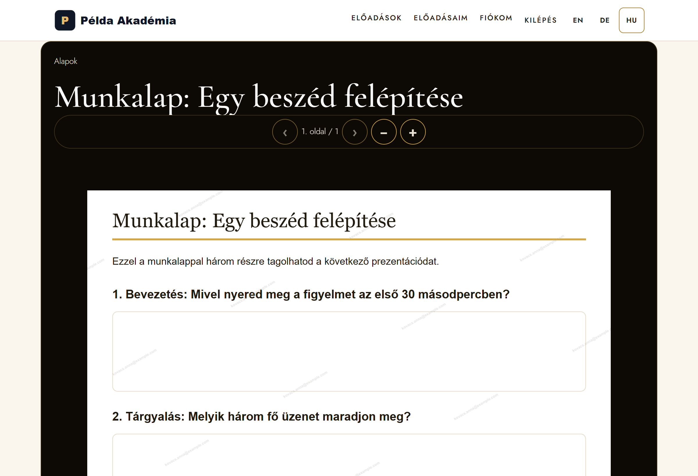
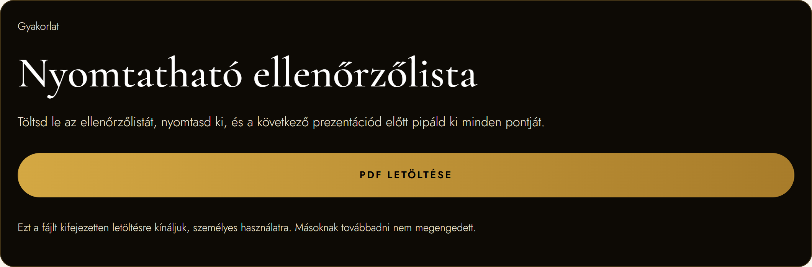
Ha egy fájl éppen nem tölthető be, ez jelenik meg: „A fájlt most nem sikerült betölteni. Kérlek, próbáld újra később.” Rövid idő múlva töltsd újra az oldalt.
7 Fiókom, rendelések és bizonylatok
A Fiókom oldalon találod az adataidat, az összes rendelésedet és a fiókod beállításait.
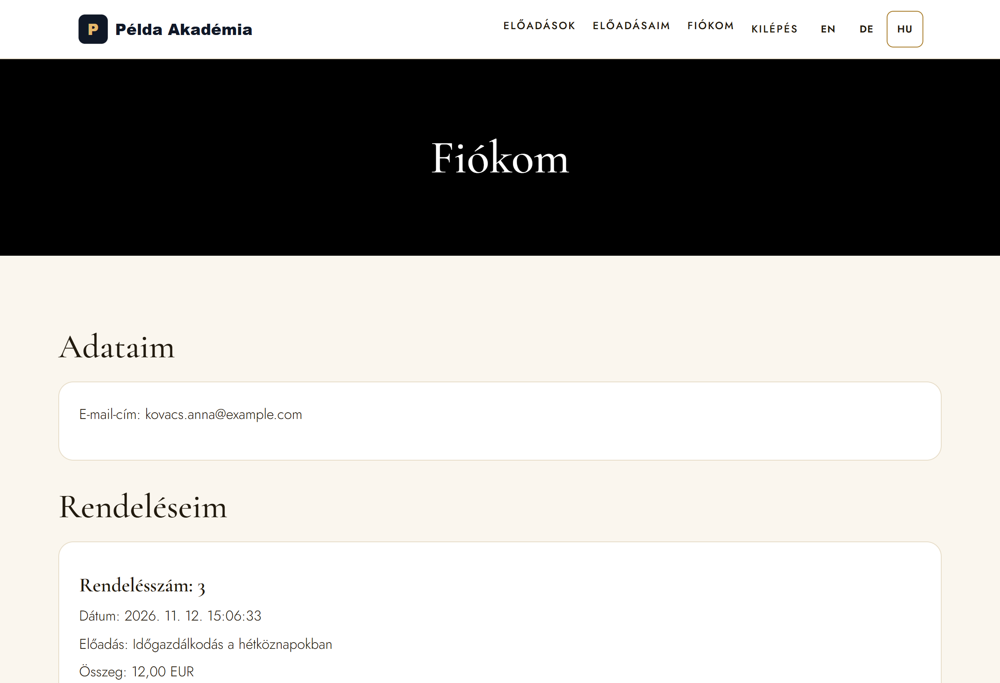
Rendeléseim
Minden rendelés mutatja a rendelésszámot, a dátumot, az előadást, az összeget, a típust (Egyszeri vásárlás vagy Előfizetés) és az állapotot:
| Állapot | Jelentés |
|---|---|
| Fizetve | A fizetés megerősítve, az előadás elérhető. |
| Ellenőrzés alatt | A fizetési folyamat ellenőrzése még tart. Addig az előadás nem érhető el. |
| Visszatérítve | Az összeget teljes egészében visszatérítették. Az ebből a vásárlásból eredő hozzáférés megszűnt. |
| Időszak végére lemondva | Az előfizetés le van mondva, és a kifizetett időszak végével megszűnik. |
A rendeléstől függően ezek a gombok érhetők el:
- Megnyitás – az előadáshoz,
- Fizetési bizonylat – új ablakban megnyitja a fizetési bizonylatot a Stripe fizetési szolgáltatónál. Ott megnézheted és elmentheted. A fizetési bizonylat nem számla,
- Elállás a szerződéstől – lásd 9. fejezet,
- előfizetéseknél az Előfizetés lemondása és az Előfizetésem kezelése – lásd 8. fejezet.
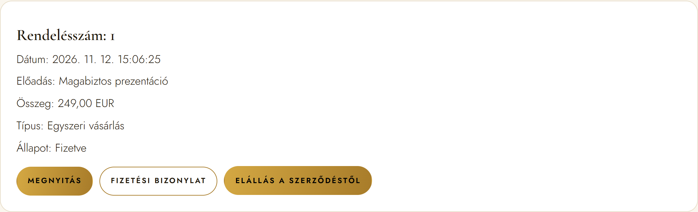
E-mail-cím módosítása
- Az E-mail-cím módosítása részben add meg az új címet és a jelenlegi jelszavadat.
- Kattints a Megerősítő levél küldése gombra. A megerősítés az új címre megy; a hivatkozás 24 óráig érvényes.
- Nyisd meg a hivatkozást. Ezután az új cím érvényes, és újra be kell lépned. A régi cím biztonsági értesítést kap.
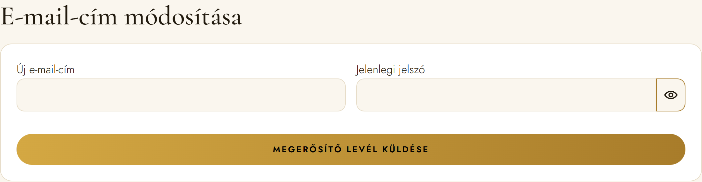
8 Előfizetés kezelése és lemondása
Ha egy előadásra előfizetésed van, az a Fiókom → Rendeléseim alatt Előfizetés típussal szerepel.
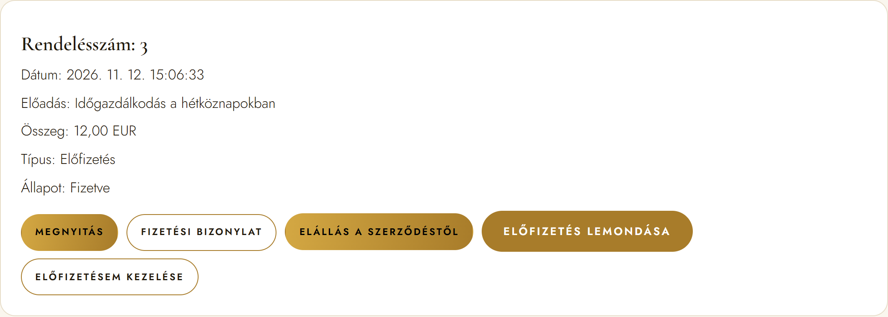
Előfizetés lemondása
- Kattints az előfizetéses rendelésnél az Előfizetés lemondása gombra. (Az Előadásaim oldalon az Előfizetés lemondása hivatkozás is ide vezet.)
- A Stripe ügyfélportáljára jutsz, és ott megerősíted a lemondást.
- Ezután visszatérsz a Fiókom oldalra, és ezt látod: „Az előfizetésed lemondását rögzítettük.”
A lemondás után a rendelésnél ez áll: „Lemondva. A hozzáférésed eddig tart: …”. A már kifizetett időszak végéig tovább használhatod az előadást; ezt követően az előfizetés már nem újul meg; a már keletkezett követeléseket ez nem érinti.
Előfizetésem kezelése
Az Előfizetésem kezelése gomb megnyitja a Stripe ügyfélportálját. Hogy ott milyen lehetőségek érhetők el (például a fizetési mód módosítása vagy a számlák megtekintése), az a szolgáltató beállításaitól függ. Az ügyfélportált és a lemondási oldalt a Stripe jeleníti meg, itt nem szerepelnek ábrán.
9 Elállás és visszatérítés
Ez a fejezet azt írja le, hogyan dolgozza fel a platform technikailag az elállási nyilatkozatot. Nem jogi tanácsadás. Az irányadó a szolgáltató elállási tájékoztatója és részvételi feltételei (hivatkozások a láblécben és a vásárlási visszaigazolásban). A törvényes fogyasztói jogaidat ez nem érinti.
Elállás bejelentése
- Nyisd meg a Fiókom oldalt, és keresd meg a rendelést a Rendeléseim alatt.
- Kattints az Elállás a szerződéstől gombra. A platform megmutatja az előadást, az összeget és a rendelés dátumát.
- Kattints a Tovább a megerősítéshez gombra.
- Erősítsd meg a nyilatkozatot – „Kijelentem, hogy elállok a fent megjelölt szerződéstől.” – az Elállás megerősítése gombbal.
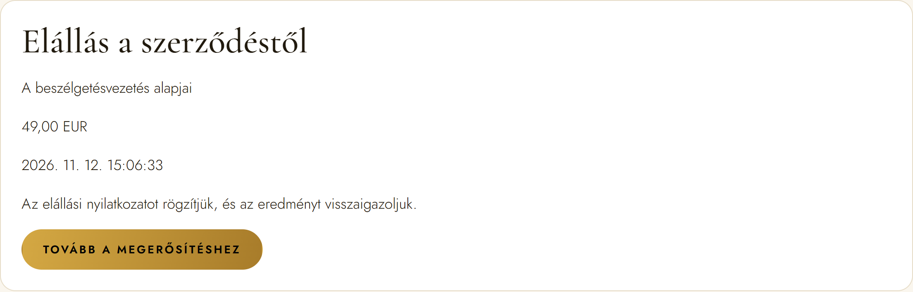
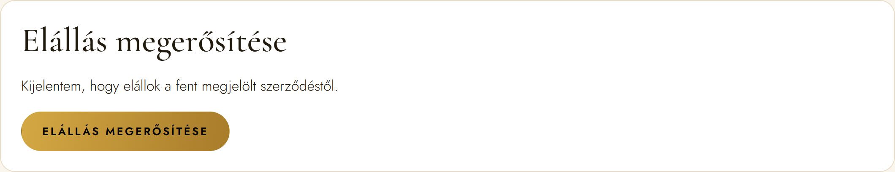
Az Elállás a szerződéstől hivatkozást minden oldal láblécében és a vásárlási visszaigazolásban is megtalálod. Az elállást e-mailben is bejelentheted a szolgáltatónak.
Mit tesz ezután a platform
A platform dátummal és időponttal rögzíti a nyilatkozatodat, és automatikusan ellenőrzi:
| Ellenőrzés | Eredmény |
|---|---|
| A rendelés az elállási határidőn belül van? (a szoftver alapbeállítása: a rendeléstől számított 14 nap) | A platform alapértelmezés szerint 14 napos időszakot ellenőriz. Ha a nyilatkozatot automatikusan elutasítja, a törvényes jogaid megvizsgálása érdekében a szolgáltatóhoz fordulhatsz. |
| Vásárláskor hozzájárultál az azonnali teljesítéshez (négyzet), és ezután megnyitottad az előadás egy leckéjét? | Ebben az esetben a platform a beállított szabályai szerint automatikusan elutasítja az elállást. |
| Előfizetés | Automatikus elállás csak az előfizetés első fizetésénél lehetséges. |
| Minden feltétel teljesül | A platform automatikusan elindítja a teljes visszatérítést a Stripe-on keresztül ugyanarra a fizetési eszközre. Az előadáshoz való hozzáférés megszűnik; az előfizetés megszűnik. |
Fontos: A táblázat azt írja le, hogyan dönt a platform a beállított szabályok alapján. Törvényes igények ettől függetlenül is fennállhatnak. A szerződési feltételekről a szolgáltató elállási tájékoztatójában és részvételi feltételeiben tájékozódhatsz. A törvényes fogyasztói jogaidat ez nem érinti.
Az eredményt azonnal látod az oldal tetején és a rendelésnél. Ezen felül e-mailt is kapsz. A jóváírás bankodtól függően néhány napig is eltarthat.
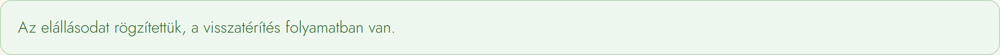
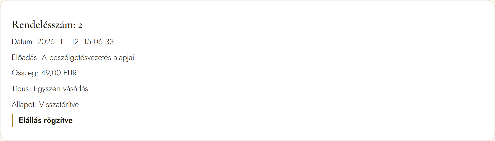
10 Adatvédelem és a fiók törlése
Adataim kérése
A Fiókom → Adataim kérése alatt az Adatok letöltése gombbal letölthetsz egy fájlt (JSON), amely a platformon tárolt személyes adataidat tartalmazza: fiókadatok, rendelések, hozzáférések, hozzájárulások és elállási nyilatkozatok.
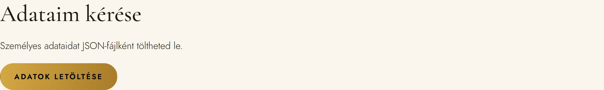
Fiók törlése
- A Fiók törlése részben add meg a jelenlegi jelszavadat.
- Kattints a Fiókom végleges törlése gombra, és erősítsd meg a rákérdezést.
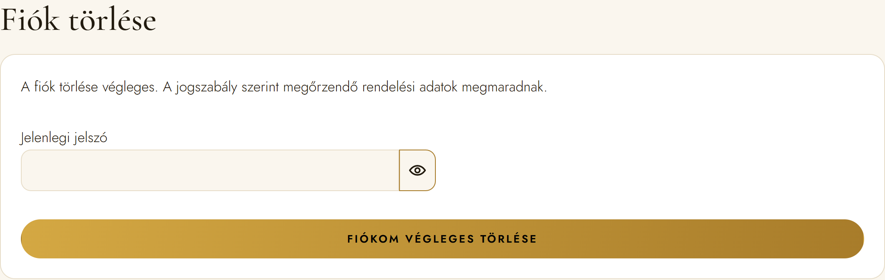
- A törlés végleges. Az összes előadáshoz való hozzáférésed megszűnik, és a platform kiléptet.
- Bizonyos rendelési és elszámolási adatok törvényes megőrzési kötelezettség miatt megmaradhatnak. Részletek a szolgáltató adatvédelmi tájékoztatójában.
- Ha még fut egy előfizetés, a törlés nem lehetséges („Előbb mondd le az előfizetésedet.”). A lemondás után törölheted a fiókot.
Hogy milyen adatokat milyen célból kezelnek, azt a szolgáltató adatvédelmi tájékoztatója tartalmazza (hivatkozás a láblécben).
11 Segítség és kapcsolat
Így éred el a szolgáltatót
- Vásárlás előtt: minden előadás oldalán A szolgáltató dobozban áll egy e-mail-cím a kérdésekhez.
- Vásárlás után: a vásárlási visszaigazolás a „Tudnivalók” részben megadja a kérdésekhez használható címet.
- Jogi tudnivalók: Minden oldal láblécében megtalálod az Impresszum, az Adatvédelem, a Részvételi feltételek, az Elállás a szerződéstől és az Elállási tájékoztató hivatkozást.
Gyakori üzenetek
| Üzenet | Mit tehetsz |
|---|---|
| Nem kaptál e-mailes vásárlási visszaigazolást, vagy az előadás nem érhető el | Nézd meg a levélszemét mappát, és ellenőrizd a rendelés állapotát a „Rendeléseim” alatt. Ne indíts második vásárlást. Ha az előadás továbbra sem érhető el, írj arra az e-mail-címre, amely „A szolgáltató” dobozban szerepel, és add meg a rendelésszámodat. |
| Erősítsd meg az e-mail-címedet a vásárláshoz. | Nyisd meg a megerősítő e-mailben lévő hivatkozást, vagy kérj új e-mailt (2. fejezet). |
| Túl sok próbálkozás. Kérlek, próbáld újra később. | Várj egy kicsit; ha elfelejtetted a jelszavadat, kérd a hivatkozást (3. fejezet). |
| Még ellenőrizzük a fizetést. | Később nézz vissza az „Előadásaim” oldalon. Ne fizess újra. |
| A fizetés megszakadt | Ellenőrizd a „Rendeléseim” alatt, hogy rögzítettek-e fizetést. Ha a fizetés állapota nem egyértelmű, ne indíts újabb vásárlást; kétség esetén fordulj a szolgáltatóhoz. |
| Az értékesítés átmenetileg szünetel. | Próbáld újra később. A már megvásárolt előadások továbbra is használhatók. |
| A fájlt most nem sikerült betölteni. | Rövid idő múlva töltsd újra az oldalt. |
| Nem sikerült kapcsolódni a szerverhez. | Ellenőrizd az internetkapcsolatot, és próbáld újra. |
| A hivatkozás érvénytelen vagy lejárt. | Kérj új hivatkozást (megerősítés: 24 óráig, jelszó: 30 percig érvényes). |